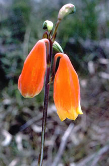
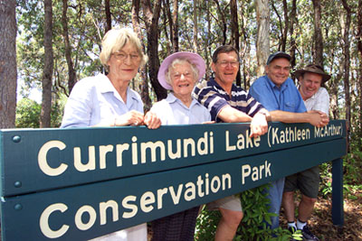

- Currimundi Conservation Park
- A chequered history
- Kawana land exchange
- The re-naming
- Plant list 2008
Currimundi Conservation Park on the northern side of Currimundi Lake was the only substantial piece of wallum preserved on Kawana during the rapid development in the 1970s and 80s, largely due to the persistence of Kathleen McArthur.
This slice of exquisite wildflowers, shrubs and trees was renamed the Currimundi (Kathleen McArthur) Conservation Park on 19 October 2003 to honour Kathleen’s contribution to the protection of the environment in the Caloundra area.
Each year during Wildflower Festival time wildflower walks are conducted by the present WPSQ branch, with a plant list distributed to aid species identification.
© WPSQ, Sunshine Coast & Hinterland Inc
The wonderful wildflower area of the Currimundi Lake Conservation Park––now the Currimundi Lake (Kathleen McArthur) Conservation Park––on the northern bank of Currimundi Lake in Caloundra has had a very chequered history.
In the 1950s and 60s most of the coastal sand dunes were under mining for their valuable minerals, while areas behind the dunes were turning into residential estates. Kathleen fought long and hard to preserve one small piece of dune and wallum at Currimundi––approximately 49 hectares including the endangered Christmas Bell (Blandfordia grandiflora)––from the same fate, lobbying the Shire Council and the local MLA, Mike Ahern.
Finally, in November 1973 an agreement was made for an exchange of crown land at Battery Hill for this piece, to be surrendered from Development Lease No. 2 held by Kawana Estates. Mr Ahern recommended to the Lands Administration Commission that the area be dedicated an environmental park as it was one of the few ‘living beaches’––a term coined by Kathleen––remaining undisturbed in south-east Queensland.
The Park  is under the Trusteeship of the Queensland Parks and Wildlife Service. Unfortunately, due to adjoining residential development, consequent alteration to the drainage pattern, and lack of regular controlled burns to limit the spread of shrubby vegetation and encourage wallum regeneration, the Christmas Bells are no more and the wildflower species are shrinking.
In Kathleen’s footsteps, in August 1998 the Caloundra Branch (now Sunshine Coast & Hinterland Inc) of the Wildlife Preservation Society of Queensland started guiding members of the public through the Park on Wildflower Walks. Experiencing the beauty of the wallum heathland would, it was hoped, again encourage more interest in native plants. In 2006 these walks became part of the Sunshine Coast Wildflower Festival, an event covering all of the Coast’s wildflower areas––something which would have delighted Kathleen.
As a fitting tribute to Kathleen McArthur’s environmental work and to celebrate the Branch’s 40th Anniversary, this group lobbied successfully for her name to be incorporated into that of the Park, and on 19 October 2003 the Currimundi Lake (Kathleen McArthur) Conservation Park was announced. Participating in the formal ceremony were members of the family, representatives from the Queensland Parks and Wildlife Service, the State Environment Minister, local councillors, and members of the Branch.
However, this raised profile was not sufficient to prevent further demands on the Park’s fragile ecosystem. The Coastal Path stretching from Bell’s Creek in the south to Noosa in the north was destined to cut through a significant area of wildflowers on a wide all-accessible concrete path on the edge of the lake. Again, in 2008, the Branch sprang to the Park’s defence, and the route is to follow the land boundaries only, giving views into the wildflowers while leaving the original sand tracks and fire break as natural walking tracks.
Jill Chamberlain
President, WPSQ, Sunshine Coast & Hinterland Inc
Kathleen McArthur Slide Collection
© WPSQ, Sunshine Coast & Hinterland Inc
Sunshine Coast Daily 28 November 1973
DECISION ON KAWANA LAND EXCHANGE
Member for Landsborough (Mr. Mike Ahern) announced today that an in-principle decision had been made in relation to a land exchange to solve the problem of the lowering of the dunes in the undisturbed areas south of the Kawana Estate.
He said he had attended a meeting at the Landsborough Shire Council on Monday between officers of the Lands Administration Commission, principals of Kawana Estates Proprietary Ltd. and the Booker developers, along with the Landsborough Shire Council. At this meeting an in-principle decision had been reached for an exchange of an area of crown land at Battery Hill for the undisturbed dune area, which will now be surrendered from Development Lease No. 2 held by Kawana Estates. He said the outstanding problems of the siting of Beerburrum Street and park land and subdivisional design had now been resolved. He thanked all concerned, in particular the principals of Kawana Estates for their helpful attitude.
Mr. Ahern said the area to be surrendered from Development Lease No. 2 comprises the undisturbed dune area, which will now be dedicated as an environmental park. The area covers approximately seven chains from high water mark. He said he had recommended to the commission that the environmental park be dedicated in this area, which is one of the few living beaches remaining undisturbed in south-east Queensland.
Reproduced with permission of Sunshine Coast Newspapers
© WPSQ, Sunshine Coast & Hinterland Inc
Sunshine Coast Weekly 22–28 October 2003
KATHLEEN’S PARK A LASTING TRIBUTE
By Damian Bathersby
The lifelong work of Sunshine Coast conservationists Kathleen McArthur was recognised Sunday when a little piece of paradise was named in her honour.
The late Mrs McArthur, who passed away in 2000, was a passionate crusader for the Currimundi Lake Conservation Park, which now bears her name.
‘Mrs McArthur opened our eyes to the beautiful native wildflowers of our coastal heathlands when these areas were not valued,’ said Queensland Environment Minister Dean Wells as he officially unveiled the ‘Currimundi Lake (Kathleen McArthur) Conservation Park’ sign. ‘What she did for this particular area in identifying the beauty and wonders of the wildflowers of the Wallum Heath has been an important part of the preservation of natural environment of the Sunshine Coast.’
Chosen as the Daily’s Sunshine Coast Citizen of the Century two years after her death, Mrs McArthur was a passionate advocate for the environment and one of the founders of the Wildlife Preservation Society of Queensland in 1962. During a touching ceremony at the tranquil park yesterday morning, she was described as an ‘artist, author, educator, conservationist, stirrer and general greenie’, by long-time friend Peter Ogilvie. ‘Currimundi Lake was a very special place to her. She used to come here and look at the wildflowers and count the ground parrots,’ he said. ‘She was quite an extraordinary person.’ Secretary of the Caloundra Branch of the Wildlife Preservation Society, Jill Chamberlain, said the Society was delighted by the honour. ‘This event is all the more significant to us, coming in the 40th anniversary year of the formation of the society.’

CRUSADER: Catherine Thynne, oldest child of Kathleen McArthur, Kathleen’s sister, Judy Nelson Gracie and son of Kathleen, Hugh McArthur, Minister for Environment Dean Wells and Member for Kawana Chris Cummins unveiled the new sign to mark the opening of Kathleen McArthur Park at Currimundi.
Reproduced with permission of Sunshine Coast Newspapers
© WPSQ, Sunshine Coast & Hinterland Inc
Some Wildflowers of Currimundi (Kathleen McArthur) Conservation Park 2008
Description |
Common Name |
Botanical Name |
purple pea flowers; creeper |
Sarsaparilla |
Hardenbergia violacea |
yellow 5 petals, large flower |
Snake Vine |
Hibbertia scandens |
white 5 petals, umbel, hairy leaves |
Hairy Psychotria |
Psychotria loniceroides |
white petals, minute |
Zieria |
Zieria minutiflora |
green, 3 bracts, hop-like |
Hop Bush |
Dodonea triquetra |
pinkish-purple flower; shrub |
Keraudrenia |
Keraudrenia hillii |
white hairy, tiny flower; berry |
White Beard |
Leucopogon pimeleoides |
white 5 round petals, large leaf |
Swamp Tea-tree |
Leptospermum speciosum |
white 5 round petals, green centre |
Tea-tree |
Leptospermum whitei |
brown flowers, curled leaves |
Curly Wigs |
Caustis recurvata |
lemon ball flowers; shrub |
Paperbark |
Melaleuca nodosa |
yellow pea cluster flowers, mitre hat |
Heath Phylotta |
Phyllota phylicoides |
white-pink hairy, tiny bell flower |
Beard Heath |
Leucopogon ericoides |
white 4 petals, orange centre |
Rice Flower |
Pimelea linifolia |
tiny white hairy bell-shaped flower |
Twiggy Beard Heath |
Leucopogon virgatus |
yellow pea; ‘Mickey Mouse’ ears |
Showy Parrot Pea |
Dillwynia floribunda |
white 5 petals, drab grey-green leaf |
Daphne Heath |
Brachyloma daphnoides |
purple 3 petals, large hairy calyx |
Flag Iris |
Patersonia sericea |
lemon-yellow, pea-shaped large flower |
Wallum Wedge Pea |
Gompholobium virgatum |
white hairy, tiny 5-petal flower |
Bearded Tea-tTree |
Leucopogon leptospermoides |
1-metre, toothed leaf, zig-zag growth |
Dwarf Banksia |
Banksia oblongifolia |
white-pink 5 petals, green centre |
Wallum Tea-tree |
Leptospermum semibaccatum |
yellow 5 petals, small flowers |
Erect Guinea Flower |
Hibberta stricta |
white 4 petals, star-like |
Wallum Zieria |
Zieria laxiflora |
purple 5 petals, 2 up, 3 down |
Blue Dampiera |
Dampiera stricta |
blue lily, 6 petals, purple fruits |
Flax Lily |
Dianella revoluta |
tiny lilac flowers, wiry leaves |
Slender Wire Lily |
Laxmannia gracilis |
pink-mauve lily, packed heads |
Vanilla Lily |
Sowerbaea juncea |
minute lemon flowers, ‘succulent’ leaf |
Heath |
Homoranthus virgatus |
yellow ball flowers, purple pods |
Sweet Wattle |
Acacia suaveolens |
yellow 4 tubular petals; shrub |
Geebung |
Persoonia virgata |
white tiny 3 horns cluster flower |
Devil’s Rice |
Conospermum taxifolium |
yellow spike flowers; tree |
Black Wattle |
Acacia concurrens |
cream brush-like flowers; tree |
Paperbark |
Melaleuca quinquenervia |
cypress-like, green-yellow-red fruit |
Cherry Ballarat |
Exocarpos cupressiformis |
yellow pea flower, ‘Mickey Mouse’ ears |
Showy Parrot Pea |
Dillwynia floribunda |
white-pink starflowers, pointed, prickly |
Beautiful Heath |
Epacris pulchella |
white 5 petals, waxy |
Queensland Wax Flower |
Philotheca myoporoides |
pink 4 petals, leaflets of three |
Wallum Boronia |
Boronia falcifolia |
tiny white 4 rounded petals |
Mitrewort |
Mitrasacme padulosa |
white 5-petal star, plump corolla |
Common Heath |
Epacris obtusifolia |
broad leaves, emerald green flowers |
Swamp Banksia |
Banksia robur |
yellow 5 petals, 2 up, 3 down, spike |
Spike Goodenia |
Goodenia stelligera |
pink 5 rounded petals |
Spoon-leaf Sundew |
Drosera spatulata |
minute reddish 4-lobed flowers |
Smoke Bush |
Gonocarpus micranthus |
red-purple small pea flowers |
Wallum Mirbelia |
Mirbelia rubiifolia |
yellow pea flowers |
Pointed Aotus |
Aotus lanigera |
white star-like 5-petal flowers |
Swamp Heath |
Sprengelia sprengelioides |
reed-like leaves, tall cream spike |
Wallum Grass Tree |
Xanthorrhoea fulva |
small white 5-lobed flowers; cream fruit |
Midyim |
Austromyrtus dulcis |
small white 5-lobed flowers; shrub |
Straggly Baeckea |
Ochrosperma lineare |
cream-yellow flowers, corky bark |
Wallum Banksia |
Banksia aemula |
small yellow pink-backed pea flower |
Leafless Bossiaea |
Bossiaea ensata |
white 5-petal rounded flowers |
Woombye |
Phebalium woombye |
rusty brown flowers, male; red, female |
Black She-Oak |
Allocasuarina littoralis |
slender yellow flowers, pointed red tips |
Mistletoe |
Dendrophthoe vitellina |